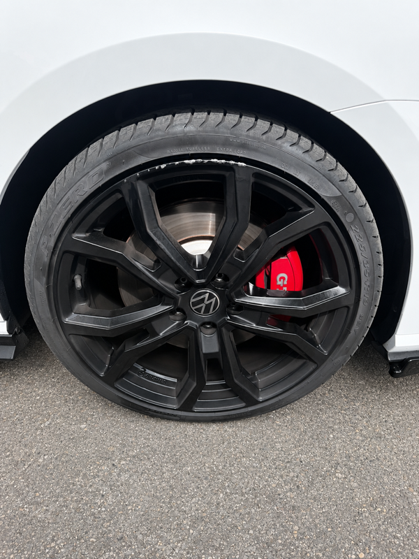

La Golf GTI, c'est un des véhicules qu'on voit le plus passer chez nous. La jante d'origine avec son design Pretoria ou Spielberg fait partie de l'identité du modèle — et quand elle prend un trottoir ou un dos d'âne mal calibré, la perte de matière sur la lèvre peut sembler catastrophique.
C'est exactement ce que pensait ce client quand il nous a appelés. Il avait déjà contacté un concessionnaire Volkswagen : réponse classique — remplacement de la jante, environ 500€ la pièce. On lui a demandé d'envoyer des photos sur WhatsApp.
Remplacement concessionnaire
~500 €
Rénovation REYNOV
169 € TTC
Le diagnostic sur photos
En quelques minutes d'échange WhatsApp, le diagnostic est posé. La jante présentait une perte de matière sur la lèvre extérieure — ce qui arrive quand la jante frotte contre un obstacle dur (trottoir, ralentisseur, rebord de parking). La matière en aluminium s'arrache plutôt que de s'écraser.
Pour beaucoup de garages, c'est une case cochée automatiquement : perte de matière = remplacement. C'est faux. La perte de matière est récupérable par rechargement, à condition que :
- La jante ne soit pas fissurée ou voilée structurellement
- La zone abîmée ne dépasse pas une certaine surface
- Le profil d'origine peut être reconstitué par soudure et meulage
Sur la Golf 7 GTI de ce client, les trois critères étaient réunis. On a bloqué un créneau pour le lendemain.
Étape 1 — Avant l'intervention

La jante arrive démontée. Premier réflexe : contrôle au marbre pour vérifier qu'elle n'est pas voilée. Si la jante est déformée géométriquement, on le traite avant de passer à la cosmétique — inutile de repeindre une jante qui vibre.
Ici, la géométrie est parfaite. On attaque directement le rechargement de matière.
Étape 2 — Rechargement et reconstitution du profil
C'est l'étape technique qui fait la différence entre un résultat propre et un résultat qui se voit. Le rechargement de matière sur aluminium se fait par soudure TIG : on dépose de la matière d'apport aluminium sur la zone creusée, couche par couche, jusqu'à dépasser légèrement le profil d'origine.
Ensuite, meulage progressif pour retrouver exactement le galbe de la lèvre d'origine. Sur une Golf GTI, la lèvre est fine et le profil précis — ça ne se fait pas à l'œil, ça se fait au gabarit.
- Décapage et nettoyage chimique de la zone abîmée
- Ponçage pour préparer l'adhérence du métal d'apport
- Rechargement TIG aluminium par passes successives
- Meulage et ponçage pour reconstituer le profil de lèvre
- Traitement de surface — apprêt bi-composant
- Application de la teinte d'origine en plusieurs couches
- Vernis de protection — finition brillante assortie aux autres jantes
Étape 3 — Le résultat

La lèvre est reconstituée à l'identique. La teinte correspond aux trois autres jantes. La zone de rechargement est invisible. Le client a récupéré son véhicule le lendemain — pour 331€ de moins que le devis du concessionnaire.
« J'étais convaincu que c'était foutu. Le concessionnaire m'avait dit de racheter la jante. REYNOV m'a envoyé des photos du résultat le lendemain — on ne voit rien du tout. »
Client Golf 7 GTI · Lyon
Vous pensez que votre jante est irrécupérable ?
Envoyez une photo sur WhatsApp — on vous dit en quelques minutes si on peut la sauver, et à quel prix.
Perte de matière sur jante : ce qu'il faut savoir
La perte de matière est l'une des dégradations les plus fréquentes sur les jantes en alliage, et l'une des plus mal diagnostiquées. Voici les idées reçues qu'on démonte régulièrement :
Idée reçue 1 : "Perte de matière = jante à changer"
Faux dans la grande majorité des cas. Tant que la structure n'est pas compromise et que la zone abîmée reste localisée, le rechargement TIG permet de restituer le profil d'origine. C'est précisément pour ça que la soudure TIG aluminium fait partie de nos prestations de base.
Idée reçue 2 : "La réparation se verra"
Seulement si elle est mal faite. Un rechargement correctement effectué, suivi d'un ponçage au gabarit et d'une mise en peinture professionnelle, produit un résultat indiscernable. Nos clients récupèrent régulièrement leur véhicule sans pouvoir distinguer la jante réparée des trois autres.
Idée reçue 3 : "C'est aussi cher que de racheter"
Une jante Golf GTI d'origine tourne autour de 350 à 550€ la pièce, hors pose et hors équilibrage. La rénovation avec rechargement commence à 169€ TTC chez REYNOV — avec le même résultat visuel et une garantie de 30 jours.
Questions fréquentes — rénovation jante Golf 7 GTI
La rénovation d'une jante Golf 7 GTI avec rechargement de matière est à partir de 169€ TTC chez REYNOV, selon l'étendue de la zone abîmée. C'est entre 2 et 3 fois moins cher qu'une jante neuve d'origine (350€ à 550€ la pièce au concessionnaire). Envoyez vos photos sur WhatsApp pour un devis précis.
Dans la grande majorité des cas, oui. La limite est atteinte si la jante est fissurée en profondeur, voilée géométriquement, ou si la zone abîmée touche le siège de valve ou le talon de pneu. On évalue ça en quelques minutes sur photos WhatsApp.
Pour une jante avec rechargement de matière, comptez 24 à 48h selon notre planning. Le client de cet article a récupéré son véhicule le lendemain de son appel. Pour les interventions urgentes, contactez-nous directement par téléphone ou WhatsApp.
Oui — Pretoria, Spielberg, Santiago, jantes spécifiques GTI Clubsport ou Performance. Les teintes argent, noir brillant, anthracite et bi-ton sont dans notre référentiel. La teinte est analysée et reproduite à l'identique pour correspondre aux autres jantes du véhicule.
Oui, on peut intervenir jante démontée à notre atelier de La Mulatière (69350). C'est même la solution la plus rapide pour une livraison J+1. On peut aussi se déplacer avec votre véhicule complet si vous préférez.
Votre jante Golf est abîmée et vous hésitez à la faire réparer ? Envoyez une photo sur WhatsApp — on vous dit en quelques minutes ce qu'on peut faire et à quel prix.
→ Voir aussi : Notre prestation rénovation · Intervention urgente Defender Lyon · BMW XM Lyon